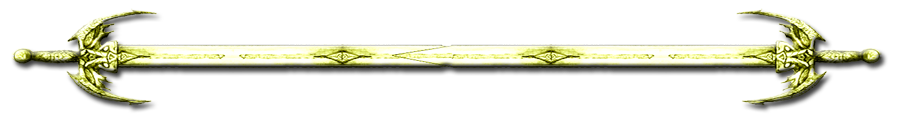

I was born near Doncaster England in the early sixties but later moved south to Sussex, where I lived for many years. One of my (several schools) was at Battle, a small town named after that historic conflict in 1066. You know the one, it culminated with poor Harold getting that arrow in his eye and those rude Normans invading our green and pleasant land.
Growing up so close to that scene of ancient carnage awarded me a fascination for all things Dark Age. I'd fallen victim to a weird and random imagination, resulting in a love of epic stories and epic story telling. This affliction prompted me to delve deep into the worlds of Tolkien, Peake, Eddison and Moorcock. Also about this time I commenced drawing imaginary maps and inventing stories about wonderfully nasty folk, doing wonderfully nasty things, whilst pent up in gloomy unpleasant places.
Then at 18 years daft, I found myself thrust deep into the Queen's Household Cavalry. How I arrived there I cannot quite recall. The result was a sharp dose of reality. But not a cure – the affliction ran deep. I left the regiment, and for a time wandered hazy through life hitting nails with hammers, sailing brigantines through southern waters, drinking venomous concoctions with venomous companions, and yes, reading lots more ghastly fantasy books.
At 27 years I became to a degree sensible. I married my beloved Rae, a watercolour artist and passionate Celt, and got a sensible career hauling trucks around the British countryside. The trouble with hauling trucks around the British countryside is that it lets the mind ramble willy nilly, when not being tortured by local radio. The result of that rambling was more stories flittering around inside this errant trucker's dizzy head.
Then, during one dark winter night back in 1993, whilst parked forlorn outside a dreary inn, something profound happened. I stumbled into Corin an Fol: a moody, rather difficult individual, mooching about in a deep tangled wood (my imagination). That wood grew into a world (not as hard as it sounds when you write fantasy stuff). The world became Ansu, home to all manner of mismatched mortals and grumpy gods.
Late 2001 a plot appeared through the murky trees. It found Corin lost and wandering and introduced him to some other unruly types, resulting in The Shattered Crown. This epic debut was scrawled out with biro ink on paper and still lurks somewhere close. I'm too scared to read it.
But The Shattered Crown couldn't contain its characters. These were (and still are) a very rough lot. They demanded a sequel. Instead (just to show who the boss was,) I focussed on a prequel, Fall of Gol being the result. But still the characters would not leave me alone. And so started The Legends of Ansu an ongoing series of otherworldly tales, mostly involving Corin and his friends.
In late 2012 Rae lost her battle with cancer. I had always promised her a Cornish ghost story based on one of her evocative paintings. And so was born a novella called The Haven. A spooky yarn blending mystery and suspense with past and present. I hope that she likes it. We both loved Cornwall where we lived for many years.
During our time there I met with Roger Garland the Tolkien Illustrator, who kindly consented to creating some fabulous images and illustrations for my work. And also designing this superb website! During 2013 I left the world of big wheels behind and focussed instead on writing full time. I moved to Georgia, married my gorgeous former shipmate Joanne, who I've known for 30 years.
Since then I have rewritten Fall of Gol shortening it's title to Gol and finally (with substantial assistance from my erudite and excellent editor, Catherine Romano) re-shaped The Shattered Crown into a rivetingly nasty read. 2015 saw the sequal-The Lost Prince, and in 2016 The Glass Throne concluded Corin's part in the Legends. But he still wanted more so I launched a prequel- Gray Wolf in 2017 about Corin's early days. I'm currently working on The Giants' Dance, and The Emerald Queen, which will both be available late 2018.
SHOW LESS
